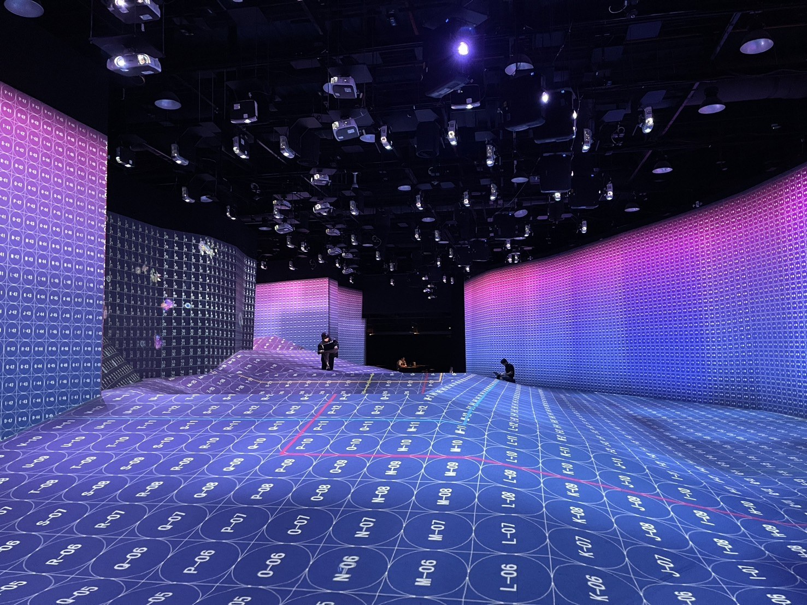

Giving Form to Space.
From site survey to final handover, the same team carries every stage: feasibility, design, fabrication and installation. Complex knowledge becomes understandable. Experience unfolds naturally.
PORTFOLIO

From brief to handover, one accountable team.
Brief & Feasibility
Site survey, code and structural constraints, and client requirements assessed before a single drawing is made.
Concept & Engineering Design
Design and structural engineering developed in parallel, so the concept is buildable within site and code constraints from day one.
Fabrication & Testing
In-house fabrication with mechanical, lighting and AV systems tested before anything leaves the workshop.
Site Installation
Scheduled, trade-by-trade installation under our own site management, coordinated with venue operations and any third-party inspectors.
Handover & QA
Final walkthrough, documentation and sign-off with the client and, where applicable, the licensor or regulatory authority.
Built to withstand what the site
the client and the code demand.

Heritage & Non-Invasive Construction
Free-standing, zero-penetration structural systems for protected buildings and historic sites, engineered to carry full scenic and MEP loads without touching the original fabric.
Experience the Yokai World →
IP-Licensed Exhibition Delivery
Execution to licensor specification: character fidelity, official colour codes, and finish quality verified through direct on-site supervision and sign-off.
INCIDENT IN CONAN EXHIBIT →
Dark-Exhibit & AV Integration
Full blackout treatment, zoned lighting, and multi-zone sensor-triggered automation integrated with concealed wiring and mechanical actuation.
Beyond Just an Exhibition–You Are Part of the Art! →
High-Precision Environmental Control
Lighting uniformity, acoustic isolation, and sensor-sensitive environments engineered to tight numerical tolerances for VR, AV and interactive systems.
Masters of Marine Illusion →
Structural & Seismic Engineering
Freestanding and suspended structures designed and evaluated against local seismic safety factors from the design stage onward.
From Dragon to Beast →
Compressed-Schedule Site Management
Phased, cross-trade scheduling and multi-party coordination to hit fixed opening dates under real-world constraints such as shared access, weather, and regulatory windows.
Eternal Notre-Dame VR Exhibition →
In-House Fabrication & Waste Management
Units and fixtures are fabricated in our own workshop and brought in for assembly, keeping materials and labor accountable end to end and reducing on-site waste and disruption. Every site follows a formal waste-sorting and recycling protocol.
Mobile Museum Vehicle Fabrication →
Remote International Delivery
Complete construction documentation precise enough to guide fabrication, display design and installation without any on-site supervision, for exhibitions built and installed entirely by a local crew abroad.
La Fortuna Bordada — Madrid →